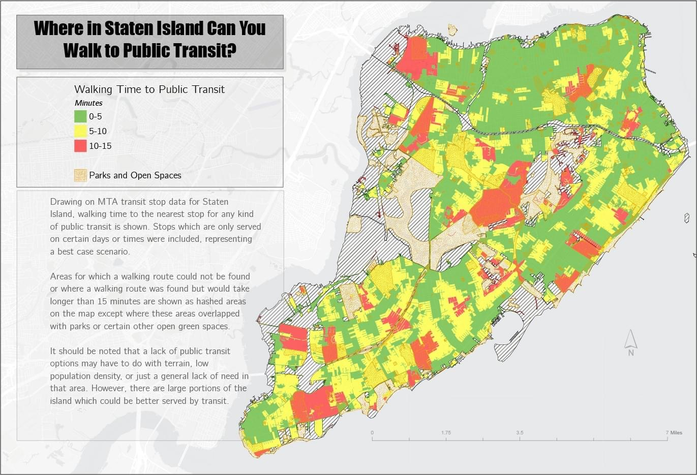

| home |
| about me |
| mapping |
| photography |
| music |
| writing |
i have undertaken a number of mapping projects over the years either for education or as part of general consultating.
below are some examples of the work i've completed as part of these projects. my work has focused primarily on transportation
and infrastructure mapping toward better serving targeted and otherwise disadvantaged communities.
if you're part of a non-profit or community-based
organization, please feel free to contact me at joshuamullenite [at] gmail.com or j.mullenite [at] chatham.edu to talk about your
project.
